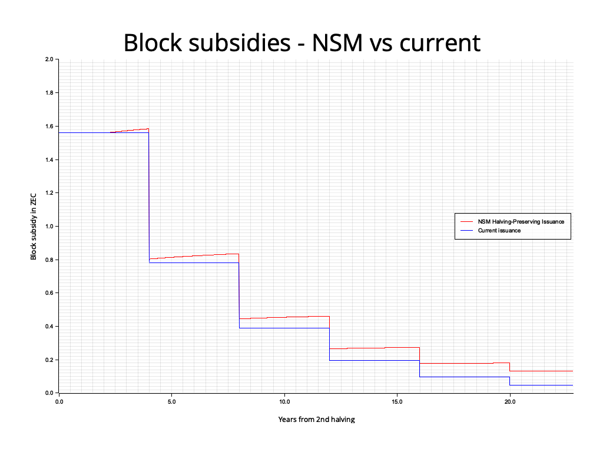
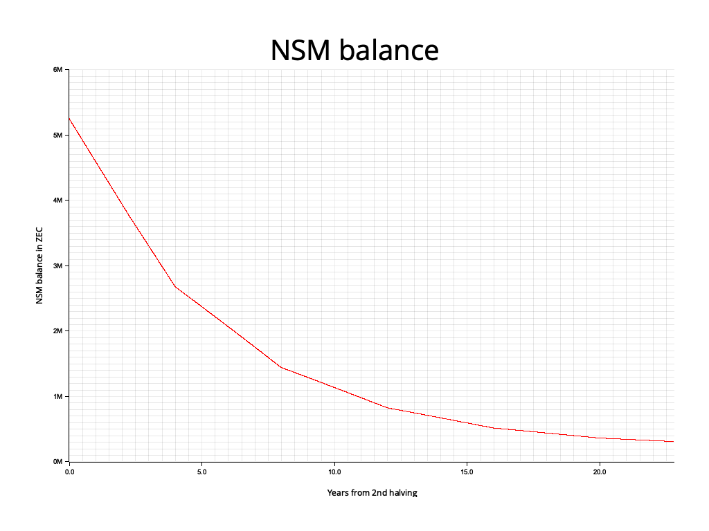

ZIP: 237
Title: Network Sustainability Mechanism: Halving-Preserving Issuance
Owners: Judah Caruso <judah@shieldedlabs.net>
Original-Authors: Nathan Wilcox
Jason McGee
Zooko Wilcox
Mark Henderson
Tomek Piotrowski
Mariusz Pilarek
Paul Dann
Credits: Conrado Gouvea
Status: Draft
Category: Consensus
Created: 2026-08-19
License: BSD-2-Clause
Discussions-To: <https://github.com/zcash/zips/issues/1353>
Pull-Request: <https://github.com/zcash/zips/pull/1354>
The key words “MUST”, “MUST NOT”, and “SHALL” in this document are to be interpreted as described in BCP 14 1 when, and only when, they appear in all capitals.
The term “network upgrade” in this document is to be interpreted as described in ZIP 200. 2
The character § is used when referring to sections of the Zcash Protocol Specification. 3
The terms “Mainnet” and “Testnet” are to be interpreted as described in § 3.12 ‘Mainnet and Testnet’. 4
The symbol “\(\,\cdot\,\)” means multiplication, and \(\mathsf{floor}(x)\) and \(\mathsf{ceiling}(x)\) mean the largest integer \(\leq x\) and the smallest integer \(\geq x\kern-0.05em\textsf{,}\) as described in § 2 ‘Notation’. 5
“ZEC/TAZ” refers to the native currency of Zcash on a given network, i.e. ZEC on Mainnet and TAZ on Testnet.
“Block Subsidy” means the algorithmic issuance of ZEC/TAZ on block creation, as defined by consensus and divided among the miner and any Funding Streams.
“Issuance” means the mechanism by which ZEC/TAZ becomes available for circulation.
Let \(\mathsf{PostBlossomHalvingInterval}\) be as defined in 6, and \(\mathsf{PostNU7HalvingInterval}\) be as defined in ZIP 218. 7
\(\mathsf{MAX\_MONEY}\kern-0.05em\textsf{,}\) as defined in § 5.3 ‘Constants’ 8, is the total ZEC/TAZ supply cap measured in zatoshi, corresponding to 21,000,000 ZEC. This is slightly larger than the supply cap for the current issuance mechanism, but is the value used in existing critical consensus checks.
“Issued Supply” - The Issued Supply at a given height of a block chain is the total ZEC/TAZ value in all chain value pool balances at that height, as calculated by \(\mathsf{IssuedSupply}(\mathsf{height})\) defined in § 4.17 ‘Chain Value Pool Balances’. 9
“Money Reserve” - The Money Reserve at a given height of a block chain is the total ZEC/TAZ value remaining to be issued, as calculated by \(\mathsf{MAX\_MONEY} - \mathsf{IssuedSupply}(\mathsf{height})\kern-0.05em\textsf{.}\)
“Scheduled Block Subsidy” - The block subsidy given by the existing halving schedule, i.e. \(\mathsf{BlockSubsidy}(\mathsf{height})\) as defined in § 7.8 ‘Calculating Block Subsidy, Funding Streams, Lockbox Disbursement, and Founders' Reward’ 10 prior to this ZIP, renamed \(\mathsf{ScheduledBlockSubsidy}(\mathsf{height})\) in the Specification below.
“NSM Value Balance” - The total ZEC/TAZ that has been removed from circulation and not yet reissued: funds removed via ZIP 235 11 or ZIP 233 12, plus block subsidy and fees left unclaimed by coinbase transactions prior to NU6 13. It is not part of the Issued Supply. \(\mathsf{NSMValueBalance}(\mathsf{height})\) is defined in the Specification below.
This ZIP proposes a change to how nodes calculate the block subsidy.
The step function around the 4-year halving intervals inherited from Bitcoin is retained unchanged. In addition, from the NSM reissuance height onward, each block issues a fixed portion of the current NSM Value Balance (the ZEC/TAZ that has been removed from circulation or left unclaimed), so that such funds are reissued along a smooth curve on top of the existing schedule.
The new issuance scheme is identical to the existing schedule whenever the NSM Value Balance is zero, and retains the existing supply cap (which is below \(\mathsf{MAX\_MONEY}\kern-0.15em\) ). Because the balance is seeded at NU7 with historical unclaimed value, it is positive at activation even if no funds are removed by a deployed removal mechanism. This ZIP is proposed as an alternative to ZIP 234 14, from which its structure and much of its text are adapted.
The current block reward halving schedule is fixed and does not provide a way to “recycle” funds removed from circulation (for example via ZIP 235 or ZIP 233) into future issuance. Once scheduled issuance ends, the network becomes reliant on transaction fees for the security budget.
Key Objectives:
This ZIP is an alternative to ZIP 234 14 that differs only in Key Objective 6. ZIP 234 replaces the halving schedule with a smooth curve in order to reissue funds removed from circulation; this ZIP shows that reissuance does not require that change. The halving schedule is a long-standing, widely understood property of Zcash on which block subsidy recipients and the wider community rely, and this ZIP allows the question of whether to change it to be decided on its own merits.
This NSM-based issuance scheme preserves the core aspects of Zcash’s issuance policy, the halving schedule, and the 21-million-coin cap. Critically, it establishes the intended path for ZEC that has been voluntarily removed from circulation, as well as transaction fees that are deliberately redirected into the reserve: these funds are automatically and algorithmically reissued over future block subsidies, ensuring they benefit the network’s long-term security.
The NSM Value Balance and additional block subsidy are calculated from already-public values: the initial balance, amounts removed from circulation, and prior reissuance. These calculations disclose no additional transaction information.
Reissuing funds removed from circulation while preserving halvings is possible using an exponential decay formula applied to the NSM Value Balance that satisfies the following requirements:
\(\mathsf{LN2\_SCALED} ⦂ \mathbb{N} := 6\_931\_680\_000\)
\(\mathsf{HalvingInterval}(\mathsf{height} ⦂ \mathbb{N}) :=\) the number of blocks in a halving period at \(\mathsf{height}\kern-0.05em\textsf{:}\) \(\mathsf{PostNU7HalvingInterval}\) if \(\mathsf{IsNU7Activated}(\mathsf{height})\) as defined in ZIP 218 7, otherwise \(\mathsf{PostBlossomHalvingInterval}\kern-0.05em\textsf{.}\)
\(\mathsf{BLOCK\_SUBSIDY\_FRACTION}(\mathsf{height} ⦂ \mathbb{N}) := \mathsf{floor}(\mathsf{LN2\_SCALED} / \mathsf{HalvingInterval}(\mathsf{height})) / 10\_000\_000\_000\)
This is \(4126 / 10\_000\_000\_000 = 0.0000004126\) with \(\mathsf{PostBlossomHalvingInterval} = 1\_680\_000\kern-0.05em\textsf{,}\) the value specified by ZIP 234 14, and \(1375 / 10\_000\_000\_000\) with \(\mathsf{PostNU7HalvingInterval} = 5\_040\_000\kern-0.05em\textsf{.}\) Since \(\mathsf{DEPLOYMENT\_BLOCK\_HEIGHT}\) is not before NU7 activation, only the latter value is used by \(\mathsf{AdditionalBlockSubsidy}\kern-0.05em\textsf{.}\) See the BLOCK_SUBSIDY_FRACTION section below.
\(\mathsf{INITIAL\_NSM\_VALUE\_BALANCE} ⦂ \{0\,..\,\mathsf{MAX\_MONEY}\} :=\) the block subsidy and fees left unclaimed by coinbase transactions before NU6, in zatoshi, which seeds the NSM Value Balance at NU7 activation. Since ZIP 236 13 requires coinbase transactions to claim their full value, this is the fixed amount
\(\sum_{\mathsf{h}=0}^{\mathsf{H}} \mathsf{ScheduledBlockSubsidy}(\mathsf{h}) - \mathsf{IssuedSupply}(\mathsf{H})\)
for any \(\mathsf{H}\) from the last pre-NU6 height up to \(\mathsf{NU7ActivationHeight} - 1\kern-0.05em\textsf{.}\) The network-specific values are:
| Network | Last pre–NU6 height \(\mathsf{H}\) | \(\mathsf{INITIAL\_NSM\_VALUE\_BALANCE}\) (zatoshi) |
|---|---|---|
| Mainnet | 2,726,399 | 36,858,445,520 (368.58445520 ZEC) |
| Testnet | 2,975,999 | 55,768,414,957 (557.68414957 TAZ) |
These values are derived as follows, in zatoshi. The scheduled issuance is calculated from § 7.8; \(\mathsf{IssuedSupply}(\mathsf{H})\) is the sum of the transparent, Sprout, Sapling and Orchard chain value pool balances at \(\mathsf{H}\) (the deferred development fund and Ironwood chain value pool balances are zero at \(\mathsf{H}\kern-0.15em\) ), which can be checked against the chain value pool balances that a full node reports at that height.
| Network | \(\sum_{\mathsf{h}=0}^{\mathsf{H}} \mathsf{ScheduledBlockSubsidy}(\mathsf{h})\) | \(\mathsf{IssuedSupply}(\mathsf{H})\) |
|---|---|---|
| Mainnet | 1,575,000,000,000,000 | 1,574,963,141,554,480 |
| Testnet | 1,603,125,000,000,000 | 1,603,069,231,585,043 |
\(\mathsf{DEPLOYMENT\_BLOCK\_HEIGHT} ⦂ \mathbb{N} :=\) the height at which reissuance begins on the relevant network, calculated in NSM reissuance height below. It is named \(\mathsf{NSM\_REISSUANCE\_HEIGHT}\) in the NU7 deployment ZIP 15.
The reissuance height is determined from the scheduled issuance curve and a reference reserve of \(\mathsf{MAX\_MONEY} - S_A(h - 1)\kern-0.05em\textsf{,}\) without accounting for amounts removed from circulation or the positive historical seed. This makes it independent of transaction activity and the actual NSM Value Balance.
For each network, let \(A = \mathsf{NU7ActivationHeight}\) and let \(B_A(h)\) be \(\mathsf{ScheduledBlockSubsidy}(h)\) after applying ZIP 218 7 at \(A\kern-0.05em\textsf{.}\) Let \(S_A(h) = \sum_{i=0}^{h} B_A(i)\) be cumulative scheduled issuance through height \(h\kern-0.05em\textsf{,}\) excluding additional NSM subsidies and amounts removed from circulation. Let \(H_3\) and \(H_4\) be the first heights at which the ZIP 218 \(\mathsf{Halving}\) function equals 3 and 4, respectively.
\(\mathsf{DEPLOYMENT\_BLOCK\_HEIGHT}\) SHALL be the first height \(h\) with \(\max(A, H_3 + 1) \leq h < H_4\) for which
\[\mathsf{ceiling}\left(\frac{1375\,(\mathsf{MAX\_MONEY} - S_A(h - 1))}{10^{10}}\right) < B_A(h).\]
Here 1375 is the numerator of \(\mathsf{BLOCK\_SUBSIDY\_FRACTION}\) after NU7 activation. The strict inequality selects the first block where the rounded reference NSM subsidy is below the scheduled block subsidy. The ceiling is the same rounding rule used for \(\mathsf{AdditionalBlockSubsidy}\kern-0.05em\textsf{;}\) the reference balance \(\mathsf{MAX\_MONEY} - S_A(h - 1)\) is used only to select the deployment height. NU7 activation heights SHALL be chosen so that this height exists before \(H_4\kern-0.05em\textsf{.}\) The NU7 deployment ZIP 15 specifies the resulting height for each network.
The value can be calculated without testing every block. Set \(h_0 = \max(A, H_3 + 1)\kern-0.05em\textsf{,}\) \(b = B_A(h_0)\kern-0.05em\textsf{,}\) \(R_0 = \mathsf{MAX\_MONEY} - S_A(h_0 - 1)\kern-0.05em\textsf{,}\) and \(R_{\max} = \mathsf{floor}((b - 1) \cdot 10^{10}/1375)\kern-0.05em\textsf{.}\) Since \(b\) is constant before \(H_4\kern-0.05em\textsf{,}\) the first qualifying height is
\[h_0 + \mathsf{ceiling}\left(\frac{\max(0, R_0 - R_{\max})}{b}\right).\]
For the expected case in which \(A\) lies between the second and third pre-NU7 halvings, the ZIP 218 third halving occurs at \(H_3 = A + 3(H_3^{(75)} - A)\kern-0.05em\textsf{,}\) where \(H_3^{(75)}\) is 4,406,400 on Mainnet and 4,476,000 on Testnet. Let \(H_2^{(75)}\) be the corresponding second halving height in the table below. In this range, \(b = 26{,}041{,}666\kern-0.05em\textsf{,}\) \(R_{\max} = 189{,}393{,}927{,}272{,}727\kern-0.05em\textsf{,}\) and \(R_0 = 262{,}499{,}975{,}638{,}334 - (A - H_2^{(75)})\) zatoshi. Consequently \(\mathsf{ceiling}((R_0 - R_{\max})/b) = 2{,}807{,}273\) throughout the range. Including the one-block offset from \(H_3\) to \(h_0\) gives \(\mathsf{DEPLOYMENT\_BLOCK\_HEIGHT} = H_3 + 2{,}807{,}274\kern-0.05em\textsf{:}\)
| Network | Second halving | Third halving after NU7 | Reissuance height |
|---|---|---|---|
| Mainnet | 2,726,400 | \(13{,}219{,}200 - 2A\) | \(16{,}026{,}474 - 2A\) |
| Testnet | 2,796,000 | \(13{,}428{,}000 - 2A\) | \(16{,}235{,}274 - 2A\) |
For example, an illustrative Mainnet activation height of \(A = 3{,}543{,}000\) gives a third halving at 6,133,200 and a reissuance height of 8,940,474. At height 8,940,473 the rounded reference subsidy is 26,041,667 zatoshi, above the scheduled 26,041,666; at 8,940,474 it is 26,041,663, below it. That example does not assign an NU7 activation height.
In § 7.8 ‘Calculating Block Subsidy, Funding Streams, Lockbox Disbursement, and Founders' Reward’ 10:
Apply the changes of ZIP 218 7 first. Then rename the resulting function \(\mathsf{BlockSubsidy}(\mathsf{height})\) to \(\mathsf{ScheduledBlockSubsidy}(\mathsf{height})\kern-0.05em\textsf{,}\) leaving its definition unchanged.
Add the following definition, where \(\mathsf{NSMValueBalance}\) is as defined in § 4.17 ‘Chain Value Pool Balances’ 9 below:
\[\mathsf{AdditionalBlockSubsidy}(\mathsf{height} ⦂ \mathbb{N}) := \begin{cases} 0, & \text{if } \mathsf{height} < \mathsf{DEPLOYMENT\_BLOCK\_HEIGHT} \\ \mathsf{ceiling}(\mathsf{BLOCK\_SUBSIDY\_FRACTION}(\mathsf{height}) \cdot \mathsf{NSMValueBalance}(\mathsf{height} - 1)), & \text{otherwise} \end{cases}\]
Define \(\mathsf{BlockSubsidy}(\mathsf{height})\) as:
\(\mathsf{BlockSubsidy}(\mathsf{height}) := \mathsf{ScheduledBlockSubsidy}(\mathsf{height}) + \mathsf{AdditionalBlockSubsidy}(\mathsf{height})\)
Add \(\mathsf{LN2\_SCALED}\) and \(\mathsf{INITIAL\_NSM\_VALUE\_BALANCE}\) to § 5.3 ‘Constants’ 8, and \(\mathsf{HalvingInterval}\) and \(\mathsf{BLOCK\_SUBSIDY\_FRACTION}\kern-0.05em\textsf{,}\) as given under Parameters above, to § 7.8.
All other uses of \(\mathsf{BlockSubsidy}(\mathsf{height})\) in the protocol specification (\(\mathsf{FoundersReward}\kern-0.05em\textsf{,}\) \(\mathsf{fsValue}\) and hence \(\mathsf{totalDeferredOutput}\kern-0.05em\textsf{,}\) \(\mathsf{MinerSubsidy}\kern-0.05em\textsf{,}\) and the total input value of a coinbase transaction in § 7.1.2 16) are unchanged and refer to the redefined function; in particular, funding streams receive their fixed percentage of the total (scheduled plus additional) block subsidy. Note that \(\mathsf{BlockSubsidy}(\mathsf{height})\) now depends on the NSM Value Balance after block \(\mathsf{height} - 1\kern-0.05em\textsf{,}\) and not only on \(\mathsf{height}\kern-0.05em\textsf{.}\)
In § 4.17 ‘Chain Value Pool Balances’ 9, add the following definition. Let \(\mathsf{removed}(\mathsf{height} ⦂ \mathbb{N})\) be the total value removed from circulation in the block at \(\mathsf{height}\) by any deployed mechanism (such as ZIP 233 12 or ZIP 235 11), or 0 if none is deployed, and \(\mathsf{NU7ActivationHeight}\) be the NU7 activation height on the relevant network. 15
\[\mathsf{NSMValueBalance}(\mathsf{height} ⦂ \mathbb{N}) := \begin{cases} 0, & \text{if } \mathsf{height} < \mathsf{NU7ActivationHeight} - 1 \\ \mathsf{INITIAL\_NSM\_VALUE\_BALANCE}, & \text{if } \mathsf{height} = \mathsf{NU7ActivationHeight} - 1 \\ \mathsf{NSMValueBalance}(\mathsf{height} - 1) - \mathsf{AdditionalBlockSubsidy}(\mathsf{height}) + \mathsf{removed}(\mathsf{height}), & \text{otherwise} \end{cases}\]
The NSM Value Balance is tracked as consensus state alongside the chain value pools. It is not a spendable chain value pool and is not included in \(\mathsf{IssuedSupply}(\mathsf{height})\kern-0.05em\textsf{:}\) it counts ZEC/TAZ that is not in circulation, consistent with ZIP 233 12, which subtracts removed funds from the issued supply. Reissuance moves value from the NSM Value Balance into the Issued Supply through the block subsidy.
Add the consensus rule:
[NU7 onward] If \(\mathsf{NSMValueBalance}(\mathsf{height})\) would become negative in the block chain created as a result of accepting a block at \(\mathsf{height}\kern-0.05em\textsf{,}\) then all nodes MUST reject the block as invalid.
In § 3.10 ‘Block Subsidy, Funding Streams, and Founders' Reward’ 17, add:
[NU7 onward] From \(\mathsf{DEPLOYMENT\_BLOCK\_HEIGHT}\kern-0.05em\textsf{,}\) the block subsidy also includes value reissued from the NSM Value Balance (§ 4.17), and so depends on the NSM Value Balance after the preceding block as well as on the block height.
In § 3.4 ‘Transactions and Treestates’ 18, where the remaining value in the transparent transaction value pool of coinbase transactions in blocks prior to NU6 is said to be destroyed, say instead that it is left unclaimed and is not added to any chain value pool, and add:
[NU7 onward] This value is included in \(\mathsf{INITIAL\_NSM\_VALUE\_BALANCE}\kern-0.05em\textsf{,}\) and so is reissued as specified in § 7.8.
All of these changes apply identically to Mainnet and Testnet.
Because the formula reduces to the existing schedule whenever the NSM Value Balance is zero, the rule itself places no constraint on the deployment height. The only change at deployment is the reissuance of the NSM Value Balance at that point (\(\mathsf{INITIAL\_NSM\_VALUE\_BALANCE}\) plus anything removed from circulation since NU7 activation) at \(\mathsf{BLOCK\_SUBSIDY\_FRACTION}\) per block. For example, if a total of 100,000 ZEC were removed from circulation between NU7 activation and \(\mathsf{DEPLOYMENT\_BLOCK\_HEIGHT}\kern-0.05em\textsf{,}\) then at \(\mathsf{DEPLOYMENT\_BLOCK\_HEIGHT}\) the issuance would be larger than the Scheduled Block Subsidy by \(100\_000\textsf{ ZEC} \cdot \mathsf{BLOCK\_SUBSIDY\_FRACTION}\kern-0.05em\textsf{,}\) which equals \(0.01375\) ZEC under the post-NU7 schedule. This example is chosen to demonstrate that a very large amount removed from circulation (much larger than expected) would elevate issuance by a relatively small amount, satisfying Requirement 5.
Since NU6, coinbase transactions are required to claim the full miner subsidy and fees 13, so the part of the NSM Value Balance not attributable to funds removed from circulation is a fixed historical amount, \(\mathsf{INITIAL\_NSM\_VALUE\_BALANCE}\kern-0.05em\textsf{:}\) on Mainnet 368.58445520 ZEC, reissued from deployment at an initial rate of about 0.00005 ZEC per block under ZIP 218.
Let \(\mathsf{IntendedFractionRemainingAfterOneHalvingPeriod} = 0.5\kern-0.05em\textsf{,}\) i.e. the NSM Value Balance should halve over the same period as the block subsidy does. The fraction is therefore stated as a function of the halving schedule rather than as a constant, so that it keeps this property whatever the block target spacing:
\((1 - \mathsf{BLOCK\_SUBSIDY\_FRACTION}(\mathsf{height}))^{\mathsf{HalvingInterval}(\mathsf{height})} \approx \mathsf{IntendedFractionRemainingAfterOneHalvingPeriod}\)
Solving gives a fraction of approximately \(\ln 2 / \mathsf{HalvingInterval}(\mathsf{height})\kern-0.05em\textsf{.}\) \(\mathsf{LN2\_SCALED}\) is \(10^{10} \cdot \ln 2 \approx 6\_931\_471\_805.6\) rounded up to a multiple of \(\mathsf{PostBlossomHalvingInterval}\kern-0.05em\textsf{,}\) so that on the 75-second schedule the numerator is exactly the 4126 of ZIP 234 14, which satisfies the approximation within \(\pm 0.003\%\kern-0.05em\textsf{.}\) ZIP 218 7 does not change \(\mathsf{PostBlossomHalvingInterval}\kern-0.05em\textsf{;}\) it defines a separate \(\mathsf{PostNU7HalvingInterval} = 5\_040\_000\) for its 25-second blocks, and with that interval the numerator is 1375, which is the value applied from \(\mathsf{DEPLOYMENT\_BLOCK\_HEIGHT}\kern-0.05em\textsf{:}\) \((1 - 1375/10^{10})^{5\_040\_000} \approx 0.50007\kern-0.05em\textsf{,}\) within \(+0.015\%\kern-0.05em\textsf{.}\) A numerator fixed at 4126 would instead halve the balance about every 1.33 years under ZIP 218, because it would apply three times as often.
Without rounding, this implies that after one halving period approximately half of the NSM Value Balance would have been issued as additional block subsidies. Rounding each subsidy up to a zatoshi increases the amount issued by less than one zatoshi per block relative to that curve. The approximation is therefore close for large balances, but not for small ones: a balance of 1 zatoshi is issued in the next block rather than halving over a halving period. More generally, once the rounded additional subsidy is 1 zatoshi, one zatoshi is issued per block until the balance reaches zero.
The largest possible value of the NSM Value Balance is less than \(\mathsf{MAX\_MONEY}\kern-0.05em\textsf{,}\) in the theoretically possible case that all issued funds are removed from circulation. If this happened, the largest interim product in the block subsidy calculation would be less than \(\mathsf{MAX\_MONEY} \cdot 1375\) under ZIP 218 7.
This uses at most 61.33 bits, below the 63-bit limit for signed two’s complement 64-bit integer amount types.
The numerator could be brought closer to the limit by using a larger denominator, but the difference in the amount issued would be very small. So we chose a power-of-10 denominator for simplicity.
The following graph compares issuance for the current halving-based step function vs this ZIP, assuming 100 ZEC per day is removed from circulation from activation (assumed at height 3,687,123 for illustration). With no removals (and every subsidy claimed in full) the two lines coincide.

The graph below shows the balance of the Money Reserve assuming this ZIP is implemented, under the same removal schedule.

A fork of the NSM Simulator allows us to simulate the effects of this ZIP on the Money Reserve and the block subsidy, as well as generate plots like the ones above. Assuming that 100 ZEC per day is removed from circulation from activation, this fragment of its output:
Halving 3 at block 4406400:
NSM subsidies: 138028653049305 (~ 1380286.530 ZEC, 0.80365268 to 0.83585478 ZEC per block)
legacy subsidies: 131250000000000 (~ 1312500.000 ZEC, 0.78125000 ZEC per block)
difference: 6778653049305 (~ 67786.530 ZEC), NSM/legacy: 1.0516
removed in period: 14583333333333 (~ 145833.333 ZEC)
shows that the difference between this and the existing halving schedule during the first full halving period after activation consists almost entirely of the reissuance of funds removed from circulation (the remainder being reissuance of the pre-NU6 shortfall); with no ZEC removed (and every subsidy claimed in full) the difference is exactly 0 at every height.
Future protocol changes may not increase the payout rate of the NSM Value Balance to a reasonable approximation beyond the one-halving-period half-life constraint.
This ZIP is proposed to activate with Network Upgrade 7 15, with reissuance beginning at \(\mathsf{DEPLOYMENT\_BLOCK\_HEIGHT}\kern-0.05em\textsf{.}\) It MUST NOT be deployed together with ZIP 234. 14 It does not depend on ZIP 233 (“NSM: Removing Funds From Circulation” 12): funds removed from circulation by ZIP 233, or by any other mechanism, are credited to the NSM Value Balance if and when that mechanism is deployed. This ZIP requires ZIP 218. 7
Information on BCP 14 — “RFC 2119: Key words for use in RFCs to Indicate Requirement Levels” and “RFC 8174: Ambiguity of Uppercase vs Lowercase in RFC 2119 Key Words” ↩︎
Zcash Protocol Specification, Version 2026.8.0 [NU6.3] or later ↩︎
Zcash Protocol Specification, Version 2026.8.0 [NU6.3]. Section 3.12: Mainnet and Testnet ↩︎
Zcash Protocol Specification, Version 2026.8.0 [NU6.3]. Section 2: Notation ↩︎
Zcash Protocol Specification, Version 2026.8.0 [NU6.3]. Section 7.7.3: Difficulty Adjustment ↩︎
Zcash Protocol Specification, Version 2026.8.0 [NU6.3]. Section 5.3: Constants ↩︎
Zcash Protocol Specification, Version 2026.8.0 [NU6.3]. Section 4.17: Chain Value Pool Balances ↩︎
Zcash Protocol Specification, Version 2026.8.0 [NU6.3]. Section 7.8: Calculating Block Subsidy, Funding Streams, Lockbox Disbursement, and Founders' Reward ↩︎
ZIP 233: Network Sustainability Mechanism: Removing Funds From Circulation ↩︎
ZIP 234: Network Sustainability Mechanism: Issuance Smoothing ↩︎
Zcash Protocol Specification, Version 2026.8.0 [NU6.3]. Section 7.1.2: Transaction Consensus Rules ↩︎
Zcash Protocol Specification, Version 2026.8.0 [NU6.3]. Section 3.10: Block Subsidy, Funding Streams, and Founders' Reward ↩︎
Zcash Protocol Specification, Version 2026.8.0 [NU6.3]. Section 3.4: Transactions and Treestates ↩︎
Zebra PR 11454: feat(chain, consensus, state, rpc): add halving-preserving NU7 issuance ↩︎
Zebra PR 11529: feat(consensus)!: implement NU7 spacing, funding schedules, and shielded limits ↩︎
Zebra PR 11530: feat(nsm)!: enable merged issuance and fee accounting ↩︎